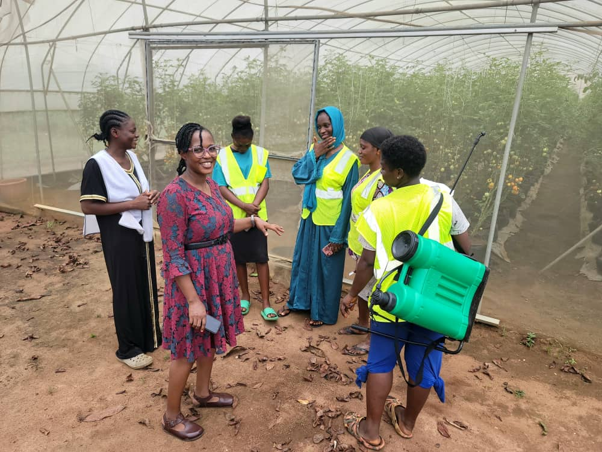

The Digital Platform for
Agricultural Entrepreneurship & Innovation
FARMCLUB OS connects learning, enterprise development, innovation and market opportunity through one integrated digital infrastructure.
Digital InfrastructurePlatform-first architecture
Knowledge-DrivenPractical learning resources
Enterprise-FocusedTools for sustainable growth
Technology-EnabledData, innovation and access
Collaborative EcosystemInstitutions and entrepreneurs
One platform. Connected possibilities.
The digital infrastructure behind the agri-entrepreneur journey.
FARMCLUB OS brings knowledge, business development, innovation, commerce and collaboration into one connected environment.
✓Learn practical skills and access expert guidance.
✓Build and manage a sustainable agricultural enterprise.
✓Connect with institutions, markets and opportunities.
FARMCLUB OS Ecosystem
🎓
Learn
💼
Build
💡
Innovate
🛒
Market
🏦
Finance
🤝
Connect
How it works
Your journey. One connected platform.
1
Join
Create your profile and define your goals.
2
Learn
Access practical knowledge and expert resources.
3
Build
Develop skills, validate ideas and structure your enterprise.
4
Grow
Receive tools, mentorship and business support.
5
Market
Connect to buyers, services and opportunities.
6
Impact
Create jobs and strengthen food systems.

Experience. Innovate. Transform.
Experience & Innovation Hub
The Hub is the physical extension of FARMCLUB OS—a place where technology, training, enterprise development and agricultural practice meet.
Explore the Hub →Build with us